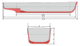

draft_depth

Definition: The draft or draught of a ship is a determined depth of the vessel below the waterline, measured vertically to its hull's lowest—its propellers, or keel, or other reference point. Draft varies according to the loaded condition of the ship. A deeper draft means the ship will have greater vertical depth below the waterline. Draft is used in under keel clearance calculations, where the draft is calculated with the available dept of water (from Electronic navigational charts) to ensure the ship can navigate safely, without grounding. Navigators can determine their draught by calculation or by visual observation (of the ship's painted loadlines).
Source: Wikipedia
Wikipedia Page (Something wrong with this association? Let us know.)
Wikidata Page (Something wrong with this association? Let us know.)
Occurs in: